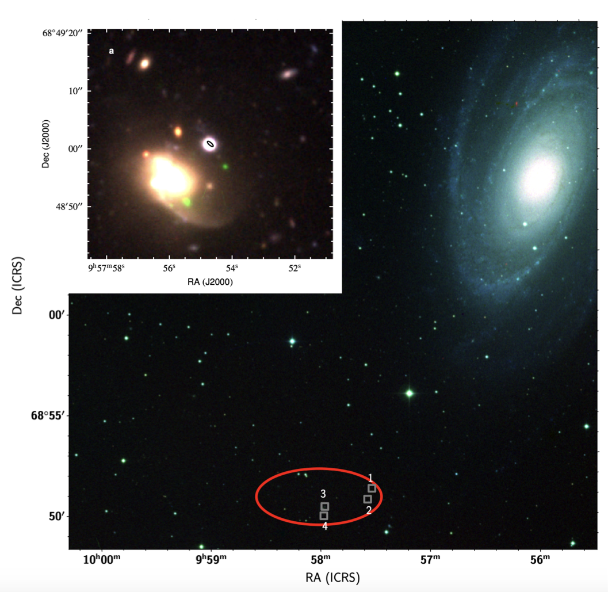

FRB 20200120E
Images from Bhardwaj et al., 2021, ApJL, 910, 18 and Kirsten et al., 2021 (ArXiv: 2105.11445)
Summary
- Detected by: CHIME
- FRB coordinates (RA, Dec): 09:57:42.1 +68:48:57 (J2000)
- Host coordinates (RA, Dec): 09:55:33 +69:03:55 (J2000)
- Redshift: −0.000113 (3.6 Mpc)
- Observed DM: 87.82 pc cm-3
- Repeating: Yes
- References: Bhardwaj et al., 2021, ApJL, 910, 18;
Kirsten et al., 2021 (ArXiv: 2105.11445)
Host galaxy properties
| Quantity | Measured value | Unit |
|---|---|---|
| Stellar mass | (7.2 ± 1.7) × 1010 | M⊙ |
| Star-formation rate | 0.6 ± 0.2 | M⊙/yr |
| E(B-V) | 0.26 | mag |
| Absolute r-band mag. | -19.78 | mag |
| u - r color (rest-frame) | 2.773 ± 0.004 | mag |
| Half-light radius | 3.5 | kpc |
| FRB offset from galaxy center | 20 ± 3 | kpc |